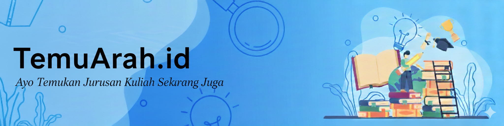

Gambaran Platform

TemuArah.id adalah platform eksplorasi jurusan yang membantu siswa dan mahasiswa memahami realita kampus sebelum mengambil keputusan besar dalam pendidikan.
Melalui fitur-fitur interaktif, pengguna dapat merasakan simulasi, memahami prospek karier, serta mendengar pengalaman nyata dari alumni.
Fitur Unggulan
Simulasi Mata Kuliah Nyata
- Contoh tugas kuliah dari berbagai jurusan
- Mini project sederhana untuk dicoba
- Gambaran aktivitas belajar di kampus
Career Reality Check
- Data pekerjaan nyata lulusan
- Kisaran gaji dan jenjang karier
- Skill yang benar-benar dipakai di dunia kerja
Tes Refleksi Berbasis Aktivitas
- Studi kasus sederhana
- Tantangan berpikir
- Mini problem solving sesuai jurusan
Cerita Alumni Jujur
- Alumni yang bekerja sesuai jurusan
- Alumni yang pindah jalur karier
- Realita kerja setelah lulus kuliah